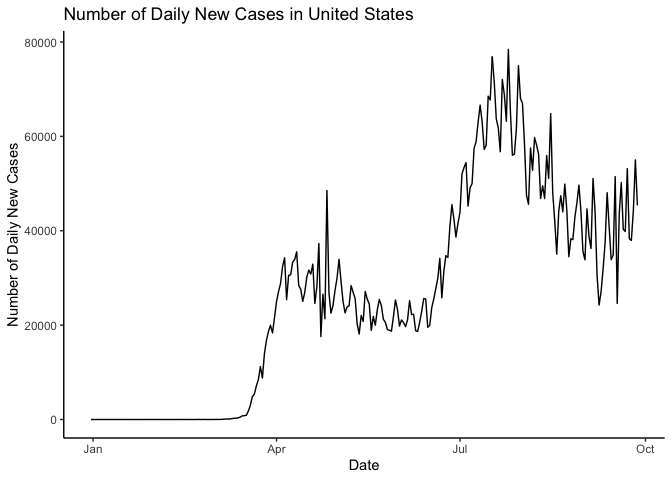

Overview
The goal of COVID19dashboard package is to provide datasets and functions to run the COVID-19 shiny dashboard.
The COVID-19 shiny dashboard, first launched on Oct 2020, aims to complement existing COVID-19 mapping dashboards (such as those developed by the WHO) with several interactive features, including the timeline function and the ability to compare between countries.
Installation
The development version can be installed from GitHub with:
# install.packages("devtools") devtools::install_github("etc5523-2020/r-package-assessment-YIWEN-JIANG-github")
Get started
The data set records COVID-19 information since Dec 31, 2019, and provided by Our World in Data.
The package includes three data, which are covid_raw, visitor_map and visitors_total.
-
covid_raw: The data comes from covid_raw.rda. The data contains the COVID-19 information of 210 countries since Dec 31, 2019.
-
visitors_total: The data comes from visitors_total.rda. The data contains information on how the number of visitors changes sine pandemic for different places.
-
visitor_map: The data comes from visitor_map.rda. The data added geometric information compare tovisitors_total, it can be used to create a map plot.
Shiny interface (How to run the app)
By using the launch_app() function to run the shiny dashboard. This app aims to complement the raw data by providing interactive visualisation and used to compare the difference between the countries.
A screenshot of the interface is provided below.

Example
This is a basic example which shows you the COVID-19 data in this package:
library(COVID19dashboard) #> Loading required package: shiny #> Loading required package: tibble #> Loading required package: shinydashboard #> #> Attaching package: 'shinydashboard' #> The following object is masked from 'package:graphics': #> #> box library(tibble) covid_raw #> # A tibble: 46,484 x 41 #> iso_code continent location date total_cases new_cases new_cases_smoot… #> <chr> <chr> <chr> <date> <dbl> <dbl> <dbl> #> 1 AFG Asia Afghani… 2019-12-31 0 0 NA #> 2 AFG Asia Afghani… 2020-01-01 0 0 NA #> 3 AFG Asia Afghani… 2020-01-02 0 0 NA #> 4 AFG Asia Afghani… 2020-01-03 0 0 NA #> 5 AFG Asia Afghani… 2020-01-04 0 0 NA #> 6 AFG Asia Afghani… 2020-01-05 0 0 NA #> 7 AFG Asia Afghani… 2020-01-06 0 0 0 #> 8 AFG Asia Afghani… 2020-01-07 0 0 0 #> 9 AFG Asia Afghani… 2020-01-08 0 0 0 #> 10 AFG Asia Afghani… 2020-01-09 0 0 0 #> # … with 46,474 more rows, and 34 more variables: total_deaths <dbl>, #> # new_deaths <dbl>, new_deaths_smoothed <dbl>, total_cases_per_million <dbl>, #> # new_cases_per_million <dbl>, new_cases_smoothed_per_million <dbl>, #> # total_deaths_per_million <dbl>, new_deaths_per_million <dbl>, #> # new_deaths_smoothed_per_million <dbl>, new_tests <lgl>, total_tests <lgl>, #> # total_tests_per_thousand <lgl>, new_tests_per_thousand <lgl>, #> # new_tests_smoothed <lgl>, new_tests_smoothed_per_thousand <lgl>, #> # tests_per_case <lgl>, positive_rate <lgl>, tests_units <lgl>, #> # stringency_index <dbl>, population <dbl>, population_density <dbl>, #> # median_age <dbl>, aged_65_older <dbl>, aged_70_older <dbl>, #> # gdp_per_capita <dbl>, extreme_poverty <dbl>, cardiovasc_death_rate <dbl>, #> # diabetes_prevalence <dbl>, female_smokers <dbl>, male_smokers <dbl>, #> # handwashing_facilities <dbl>, hospital_beds_per_thousand <dbl>, #> # life_expectancy <dbl>, human_development_index <dbl>
There are four functions inside this package, which are:
-
launch_app(): Launch the COVID-19 shiny dashboard
-
add_comma(): Label numbers in decimal format (e.g. 1,234)
-
shiny_note(): Add a note box into shiny app
-
date_range(): Create date range input
Plotting the number of daily new cases in the United States
library(tidyverse) #> ── Attaching packages ─────────────────────────────────────── tidyverse 1.3.0 ── #> ✓ ggplot2 3.3.2 ✓ dplyr 1.0.2 #> ✓ tidyr 1.1.2 ✓ stringr 1.4.0 #> ✓ readr 1.4.0 ✓ forcats 0.5.0 #> ✓ purrr 0.3.4 #> ── Conflicts ────────────────────────────────────────── tidyverse_conflicts() ── #> x dplyr::filter() masks stats::filter() #> x dplyr::lag() masks stats::lag() covid_raw %>% dplyr::filter(location == "United States") %>% ggplot() + geom_line(aes(x = date, y = new_cases)) + theme_classic() + ylab("Number of Daily New Cases") + xlab("Date") + ggtitle("Number of Daily New Cases in United States")

Data Source
- Our World in Data: https://ourworldindata.org/coronavirus
- Google Community Mobility Reports: https://www.google.com/covid19/mobility/